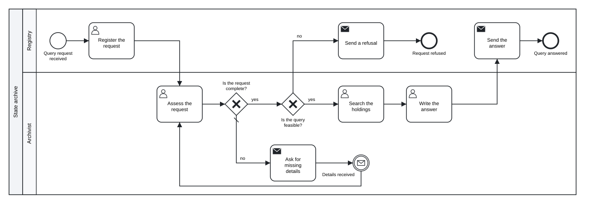

Chapter 11 Simulation and process mining
In this chapter you will add durations, resources, case variables, branch probabilities and arrivals to a model · run tok sim and read its indicators: end events, cycle time, waiting, processing and utilization · compare scenarios with the same seed and with replications · write the event log as CSV and XES and open it in process-mining tools · simulate from R and Python, run large experiments natively in Julia with Tok.Sim and calibrate a model on an event log with Tok.Fit
A process model shows what happens and who does it. It does not show how long the work takes when there are many cases and few people. A head of an archive asks questions of exactly that kind: how long do applicants wait for an answer when requests double, would a third archivist shorten the wait or sit idle, what would change if impossible requests were refused at registration? Trying the answers out in practice is expensive: hiring someone or changing a procedure is a decision for months.
Simulation answers such questions on the model. The simulator sends hundreds of invented cases through the process, draws working times and decisions from distributions, makes each case wait while the people it needs are busy, and measures what happens. In tok the simulation is not a separate tool with a separate model: the parameters are written into the same .tok file, and the same file still exports the same BPMN.
Simulation does not predict the future. It shows the consequences of assumptions. If you assume that a search in the holdings takes six hours on average and in reality it takes ten, the results will be wrong. Every simulation result is therefore reported together with its assumptions, and the last section of this chapter shows how to estimate the assumptions from data.
11.1 The simulation layer
Three statements and six attributes make a model simulable:
| Statement or attribute | Meaning |
|---|---|
simulate cases=N seed=N arrival="DIST" start="DATETIME" |
the number of cases (default 100), the seed of the random numbers, the time between consecutive arrivals, and the simulated time of the first arrival (default 2027-01-04T08:00) |
resource ID "Label" count=N |
a pool of N interchangeable performers |
variable NAME "DIST" |
a case variable, drawn once per case when it starts |
activity by=ID |
the activity waits for a free performer of resource ID (first come, first served) |
activity duration="DIST" |
the processing time; without it, zero |
activity assign="NAME=DIST; …" |
variables set when the activity completes, such as a decision a person takes |
catch event, receive task or message boundary event delay="DIST" |
the time until the awaited message or signal arrives |
flow p=NUMBER |
the probability of the branch at an xor or or gateway without conditions |
None of them changes the BPMN export: the diagram in Camunda Modeler looks the same with and without them. In a document of language 0.5 or later resource and by= additionally export BPMN resources and performers (Chapter 6); count= stays a simulation setting.
11.1.1 Distributions
Working times are never constant. A search in the holdings takes an hour one day and two days the next. Times are therefore written as distributions, which describe how often short and long cases occur. A distribution is a duration (30m), a number, or a call. Durations use the units s, m (minutes), h and d; inside unif, tri, norm, lnorm and exp the arguments are either all durations or all numbers.
| Call | Meaning | When to use it | Example |
|---|---|---|---|
fixed(x) or x |
always x |
the work always takes the same time | fixed(15m), 5m |
tri(a, mode, b) |
triangular: minimum, most likely, maximum | no data, but the people who do the work can name the shortest, the usual and the longest time | tri(5m, 10m, 20m) |
lnorm(mean, sd) |
log-normal, given by the mean and standard deviation of the result | data from a register: most cases are short, a few are very long | lnorm(6h, 3h) |
norm(mean, sd) |
normal; a negative duration becomes 0 | symmetric variation around a mean | norm(1h, 10m) |
exp(mean) |
exponential with the given mean | the time between independent arrivals | exp(4h) |
unif(a, b) |
uniform between a and b |
every value of a range is equally likely | unif(20, 300) |
bern(p) |
true with probability p |
an event happens or not | bern(0.9) |
cat(a=p, b=q, …) |
one of the labels with the given probabilities | one of several categories | cat(genealogical=0.6, property=0.4) |
Note the parameters of lnorm: they are the mean and standard deviation of the duration itself, not of its logarithm, so you can take them directly from a register. In cat, the labels true, false and numbers become booleans and numbers. assign= sets several variables at once, separated by semicolons: assign="complete=bern(0.9); urgent=bern(0.1)".
11.1.2 Choosing a branch
At a splitting gateway the simulator chooses the branch in one of two ways. If the outgoing flows have conditions (when=), it evaluates them on the variables of the case, exactly as an engine would; the first flow in document order whose condition holds is taken, otherwise the default flow. If the flows have probabilities (p=), it draws one. An or gateway activates every flow whose condition holds or whose probability is drawn, each independently.
The check watches over both: S002 reports probabilities of an xor gateway that do not sum to 1, S003 a gateway with several outgoing flows and neither conditions nor probabilities in a document with a simulate statement (the simulator would always take the first flow), and S001 an invalid distribution or probability.
11.2 A simulation model
A state archive answers genealogical queries. A registry clerk registers each request. One of two archivists assesses it; one request in ten lacks details, the archivist asks the applicant for them, and the applicant answers after three days on average. Fifteen percent of the requests cannot be answered and are refused; the rest are searched for in the holdings and answered. A request arrives every four hours on average.
tok 1.0 "Archive queries: workload simulation"
pool archive "State archive"
lane registry "Registry"
start arrived "Query request received"
user register "Register the request" by=clerks duration="tri(5m, 10m, 20m)"
send refuse "Send a refusal" by=clerks duration="tri(5m, 10m, 15m)"
end refused "Request refused"
send answer "Send the answer" by=clerks duration="tri(5m, 10m, 15m)"
end answered "Query answered"
lane archivist "Archivist"
user assess "Assess the request" by=archivists duration="lnorm(30m, 10m)" assign="complete=bern(0.9)"
xor is-complete "Is the request complete?"
send ask "Ask for missing details" by=archivists duration="5m"
catch details "Details received" message="Details" delay="exp(3d)"
xor feasible "Is the query feasible?"
user search "Search the holdings" by=archivists duration="lnorm(6h, 3h)"
user write "Write the answer" by=archivists duration="tri(30m, 1h, 2h)"
flow arrived -> register -> assess -> is-complete
flow is-complete -> feasible "yes" when="complete = true"
flow is-complete -> ask "no" default
flow ask -> details -> assess
flow feasible -> search "yes" p=0.85
flow feasible -> refuse "no" p=0.15
flow refuse -> refused
flow search -> write -> answer -> answered
simulate cases=300 seed=7 arrival="exp(4h)"
resource archivists "Archivists" count=2
resource clerks "Registry clerks" count=1
Figure 11.1: Archive queries: the model with its simulation parameters. The diagram is the same as without them.
Download the model (.tok) Download the BPMN export (.bpmn)
The model combines both ways of choosing a branch. The assessment sets the variable complete with assign="complete=bern(0.9)", and the gateway is-complete tests it with a condition, as an executable model would. The gateway feasible has no data to decide on, so it draws with p=0.85 and p=0.15. The catch event details waits for the applicant with delay="exp(3d)", and the case then goes back to the assessment, which draws complete again.
11.3 Running tok sim
tok sim 11-archive-queries.tokSimulation (seed 7): 300 cases started, 300 finished
End events
answered 253 84.3%
refused 47 15.7%
Cycle time: mean 1.2 d, median 19.1 h, 90th percentile 2.3 d
Activities (count, mean wait, mean processing)
Register the request 300 48 s 11.7 min
Assess the request 343 4.5 h 29.7 min
Search the holdings 253 4.5 h 5.7 h
Write the answer 253 4.4 h 1.2 h
Send the answer 253 32 s 9.8 min
Send a refusal 47 33 s 9.7 min
Ask for missing details 43 3.1 h 5.0 min
Resources (utilization)
Archivists x2 77.5%
Registry clerks x1 8.7%The run uses the 300 cases and the seed 7 of the simulate statement. --cases N and --seed N override them for one run, --lang pl prints the report in Polish and --json prints the indicators as JSON for programs.
11.4 Reading the indicators
| Indicator | What it means | In the example |
|---|---|---|
| end events | how many cases ended at each end event | 84% answered, 16% refused (the model assumes 15%; the difference is the luck of the draw) |
| cycle time | the time from the arrival of a case to its end | 1.2 days on average |
| median | half of the cases took less, half took more | 19.1 hours |
| 90th percentile | nine cases in ten ended within this time | 2.3 days |
| count | completed instances of the activity | 343 assessments for 300 requests: 43 were assessed twice |
| mean wait | how long a case waited for a free performer before the activity | about 4.5 hours before each task of the archivists |
| mean processing | how long the work itself took | 5.7 hours of search |
| utilization | the busy time of a resource divided by its count times the simulated period | archivists 77.5%, clerk 8.7% |
The most important finding is in the waiting column. Before each of the three main tasks of the archivists a case waits about four and a half hours, more than thirteen hours in total, while the work itself takes about seven. The bottleneck of the process is the archivists, not the registry. The clerk, busy less than a tenth of the time, could take on more work.
The utilization can be checked by hand, which is a good habit before you trust any simulation. Per request the archivists spend about 0.57 hours on assessments (343 assessments of 29.7 minutes for 300 requests), a little on asking for details, and for the 84% of requests that are answered about 5.7 + 1.2 hours on search and writing: roughly 6.4 hours in total. With a request every four hours and two archivists, they are busy about 6.4 / (2 × 4) ≈ 80% of the time; the simulation gives 77.5%, because its simulated period also includes the time after the last arrival, while the last cases are finished. What the arithmetic cannot tell you is how long the queues are. That is what the simulation adds: at 80% utilization, every cluster of arrivals builds a queue that takes long to clear.
The gap between the median (19.1 h) and the mean (1.2 d) has a second cause, which the model makes visible: the requests that wait three days for missing details. They are few, but long, and they pull the mean and the 90th percentile up. For an applicant the predictability of the answer matters as much as its average, which is why reports give percentiles and not only the mean.
11.5 Seeds, cases and replications
The simulator draws all its random numbers from one generator seeded with seed=. The same document and the same seed always give the same log and the same indicators, number by number, on the command line, in Python, in R and in the playground, because all of them run the same engine. A result in a report can therefore be checked by anyone who has the file.
A seed does not make two scenarios draw the same cases, however. When you change the number of performers, activities finish in another order and the following draws fall to other cases. This is why the share of refusals differs between runs although the model of refusals is the same. Compare scenarios by indicators over hundreds of cases, never by the fate of single cases, and when the differences are small, by several replications: runs with different seeds whose results you average. A short Python script (Chapter 13) does this for two, three and four archivists, with twenty seeds each:
from statistics import mean
from tok import api
text = open("11-archive-queries.tok", encoding="utf-8").read()
for n in (2, 3, 4):
model = text.replace('count=2', 'count=%d' % n, 1)
runs = [api.simulate(model, cases=300, seed=s).kpi() for s in range(1, 21)]
cycle = mean(k["cycle_time"]["mean_s"] for k in runs) / 3600
p90 = mean(k["cycle_time"]["p90_s"] for k in runs) / 3600
busy = mean(k["resources"]["archivists"]["utilization"] for k in runs)
print("%d archivists: mean cycle %.1f h, p90 %.1f h, utilization %.0f%%" % (n, cycle, p90, 100 * busy))2 archivists: mean cycle 26.4 h, p90 47.1 h, utilization 73%
3 archivists: mean cycle 16.3 h, p90 20.9 h, utilization 49%
4 archivists: mean cycle 14.3 h, p90 17.3 h, utilization 38%The third archivist removes most of the queue: the mean cycle time falls by ten hours and the 90th percentile by more than a day. The fourth adds little, because most of the remaining time is the work itself and the applicants’ answers. Utilization falls with every new person. Low utilization is not wasted capacity: it is what lets a team absorb a sudden rush of requests and do work the model does not contain. The simulation gives the head of the archive numbers, not the decision.
11.6 Comparing scenarios
A scenario is a copy of the model with one change. The model with three archivists differs in one line:
resource archivists "Archivists" count=3Download the scenario with three archivists (.tok)
Simulation (seed 7): 300 cases started, 300 finished
End events
answered 243 81.0%
refused 57 19.0%
Cycle time: mean 19.3 h, median 8.8 h, 90th percentile 2.0 d
Activities (count, mean wait, mean processing)
Register the request 300 43 s 11.4 min
Assess the request 346 30.3 min 29.1 min
Search the holdings 243 35.2 min 6.2 h
Write the answer 243 40.1 min 1.1 h
Send the answer 243 31 s 9.9 min
Ask for missing details 46 14.0 min 5.0 min
Send a refusal 57 0 s 9.5 min
Resources (utilization)
Archivists x3 54.2%
Registry clerks x1 8.9%| Indicator | 2 archivists | 3 archivists |
|---|---|---|
| mean cycle time | 1.2 d | 19.3 h |
| median | 19.1 h | 8.8 h |
| 90th percentile | 2.3 d | 2.0 d |
| wait before the assessment | 4.5 h | 30.3 min |
| utilization of the archivists | 77.5% | 54.2% |
The median falls to less than half and the waits before the archivists’ tasks almost disappear. The 90th percentile barely moves in this single run, and the replications above tell why: the slowest tenth of the cases are the ones that wait days for missing details, and no archivist shortens that wait. With seed 7 the slowest tenth includes more of them than on average (the twenty seeds gave 20.9 hours for three archivists). An indicator that sits on the edge of such a group varies strongly between runs, which is one more reason to look at replications before drawing conclusions from it. A change that would shorten the tail is a different one: asking for details at registration, before the request waits for an archivist.
11.7 Event logs
The report gives averages. For a closer analysis, the simulator writes the individual events on request:
tok sim 11-archive-queries.tok --log log.csv --cases-csv cases.csv --xes log.xesThe event log (--log) has one row per activity instance:
case,activity,label,resource,enqueue,start,end,status
1,register,Register the request,clerks,2027-01-04T08:00:00,2027-01-04T08:00:00,2027-01-04T08:09:55,completed
1,assess,Assess the request,archivists,2027-01-04T08:09:55,2027-01-04T08:09:55,2027-01-04T08:41:05,completed
2,register,Register the request,clerks,2027-01-04T08:39:14,2027-01-04T08:39:14,2027-01-04T08:50:54,completed
2,assess,Assess the request,archivists,2027-01-04T08:50:54,2027-01-04T08:50:54,2027-01-04T09:13:13,completed| Column | Content |
|---|---|
case |
the case number, from 1 |
activity, label |
the identifier and the label of the activity |
resource |
the resource of by= (empty if none) |
enqueue |
when the case reached the activity |
start |
when a performer started the work (empty if the activity was interrupted while waiting) |
end |
when the activity completed or was interrupted |
status |
completed, or interrupted by a boundary timer |
The waiting time of an instance is start − enqueue, its processing time end − start. The table of cases (--cases-csv) has one row per case: the case number, its start and end, the end event, the cycle time in seconds and the case variables as JSON:
case,start,end,end_event,cycle_time_s,variables
1,2027-01-04T08:00:00,2027-01-04T13:31:21,answered,19881.119,"{""complete"": true}"
2,2027-01-04T08:39:14,2027-01-04T17:11:57,answered,30762.674,"{""complete"": true}"
3,2027-01-04T10:28:29,2027-01-04T18:09:43,answered,27674.15,"{""complete"": true}"Simulated time is calendar time counted from start= of simulate, without working-hours calendars: a six-hour task started at 16:00 ends at 22:00. The results therefore describe continuous work; to translate them into working days, divide by the length of a working day and treat the result as an approximation.
11.7.1 XES for process-mining tools
--xes writes the same log in XES (IEEE 1849-2016, eXtensible Event Stream), the exchange format of process-mining tools such as ProM, PM4Py, bupaR, Disco and Celonis. They read it without any column mapping. The file declares the standard extensions Concept, Time, Lifecycle and Organizational, three classifiers, and one trace per case:
<trace>
<string key="concept:name" value="1"/>
<date key="start" value="2027-01-04T08:00:00.000"/>
<date key="end" value="2027-01-04T13:31:21.119"/>
<string key="end_event" value="answered"/>
<float key="cycle_time_s" value="19881.119"/>
<boolean key="complete" value="true"/>
<event>
<string key="concept:name" value="Register the request"/>
<string key="concept:instance" value="1"/>
<string key="lifecycle:transition" value="schedule"/>
<date key="time:timestamp" value="2027-01-04T08:00:00.000"/>
<string key="org:resource" value="clerks"/>
<string key="activity" value="register"/>
</event>Each activity instance gives up to three events in the standard lifecycle: schedule when the case reached the activity, start when the work started, and complete when it ended; an instance interrupted by a boundary timer ends with ati_abort while running or withdraw while still waiting. The trace carries the end event, the cycle time and the case variables with their types. Timestamps keep the UTC offset of start=: write start="2027-03-01T09:00+01:00" to get times with +01:00, or leave the offset out to have them read as local time. The same document and seed give the same bytes.
11.8 Process mining on simulated logs
Process mining discovers processes from event logs: it draws the process that the log contains, measures the times between activities and finds the variants cases follow. On a simulated log you can try the methods before you have real data, check that a discovered model looks like the one you simulated, and prepare the analysis that will later run on the log of a real system: the columns of tok sim --log have the same structure as event logs exported from workflow and records management systems.
In Python, PM4Py reads the XES file directly:
import pm4py
log = pm4py.read_xes("log.xes")
net, initial, final = pm4py.discover_petri_net_inductive(log)
pm4py.view_petri_net(net, initial, final)or the CSV log after naming its columns:
import pandas as pd
import pm4py
df = pd.read_csv("log.csv", parse_dates=["enqueue", "start", "end"])
df = pm4py.format_dataframe(df, case_id="case", activity_key="label", timestamp_key="end")
pm4py.view_dfg(*pm4py.discover_dfg(df))ProM, Disco and other desktop tools open the XES file from their import dialogs. In R the package tokr gives the log as a data frame with the column names process-mining packages expect, so bupaR takes it without conversion:
library(tokr)
s <- tok_sim("11-archive-queries.tok")
log <- as.data.frame(s)
bupaR::activitylog(log, case_id = "case_id", activity_id = "activity_id",
resource_id = "resource_id",
timestamps = c("schedule", "start", "complete"))The model you discover from a simulated log is a useful check of the model you wrote: if the discovered process has a path you did not intend, the simulation follows that path too.
11.9 Simulation in R
The R package tokr (Chapter 13) runs the same simulator and returns its results as data frames, ready for tables and plots:
library(tokr)
s <- tok_sim("11-archive-queries.tok") # cases and seed of the model
s # the report of tok sim
s <- tok_sim("11-archive-queries.tok", cases = 1000, seed = 3)
s$kpi$cycle_time$mean_s # mean cycle time in seconds
s$kpi$activities # one row per activity
s$kpi$resources # one row per resource, utilization as a fraction
s$cases # one row per case, one column per variable
tok_xes(s, "queries.xes") # the XES log of the same runs$kpi$activities has the columns activity, label, count, mean_wait_s, mean_processing_s, mean_wait and mean_processing; s$kpi$resources has resource, label, count and utilization. The table of cases has the columns case, start, end, end_event and cycle_time_s, then one column per case variable; the event log of as.data.frame(s) has the columns of tok sim --log and, under the names case_id, activity_id, activity_instance_id, resource_id, schedule and complete, the same data for process-mining packages. Times are POSIXct values in UTC.
With the two scenario files, a few lines of base R compare their cycle times:
cycle_hours <- function(file) tok_sim(file)$cases$cycle_time_s / 3600
two <- cycle_hours("11-archive-queries.tok")
three <- cycle_hours("11-archive-queries-3.tok")
sapply(list(two = two, three = three), quantile, probs = c(0.5, 0.9))
boxplot(list("2 archivists" = two, "3 archivists" = three), horizontal = TRUE,
xlab = "Cycle time (hours)")11.10 Simulation in Python
The module tok.api of the Python package gives the simulation to programs and notebooks:
from tok import api
text = open("11-archive-queries.tok", encoding="utf-8").read()
result = api.simulate(text, cases=1000, seed=3)
kpi = result.kpi() # the indicators as a dict, as tok sim --json
print(api.format_kpi(kpi)) # the report of tok sim
result.log[:3] # the event log: one dict per activity instance
result.cases[:3] # one dict per case
result.write_csv("log.csv", "cases.csv") # the files of --log and --cases-csv
result.write_xes("log.xes") # the file of --xesThe indicators have the structure of tok sim --json: kpi["cases"] with started, finished and by_end_event; kpi["cycle_time"] with mean_s, median_s and p90_s in seconds and the same as short texts; kpi["activities"][ID] with count, mean_wait_s and mean_processing_s; kpi["resources"][ID]["utilization"]; kpi["horizon_s"], the simulated period; and kpi["warnings"], conditions or expressions the simulator could not evaluate. With pandas, pd.DataFrame(result.log) turns the log into a data frame.
11.11 Native simulation in Julia
Experiments with many scenarios and hundreds of replications are faster in the native simulator of the Julia package, Tok.Sim. It reads the model through the engine, so the document is parsed and checked exactly as tok check does, and it asks the engine to evaluate the conditions of flows, so conditions mean exactly what they mean in tok sim. Everything else runs in compiled Julia, in parallel on the threads you give Julia (julia -t auto).
using Tok
const S = Tok.Sim
text = read("11-archive-queries.tok", String)
m = S.model(text)
three = S.scenario(m; name="three archivists", resources=Dict("archivists" => 3))
busier = S.scenario(m; name="busier", arrival="exp(3h)")
e = S.experiment([m, three, busier]; replications=200, seed=1)
for r in S.summarize(e)
r.indicator in ("cycle_time_mean_s", "cycle_time_p90_s", "utilization:archivists") || continue
println(rpad(r.scenario, 18), rpad(r.indicator, 24), round(r.mean; sigdigits=4),
" ± ", round(r.half_width; sigdigits=2))
endmodel cycle_time_mean_s 96000.0 ± 3000.0
model cycle_time_p90_s 172500.0 ± 6800.0
model utilization:archivists 0.7556 ± 0.0089
three archivists cycle_time_mean_s 59890.0 ± 1100.0
three archivists cycle_time_p90_s 80580.0 ± 3100.0
three archivists utilization:archivists 0.5132 ± 0.0066
busier cycle_time_mean_s 340100.0 ± 17000.0
busier cycle_time_p90_s 580700.0 ± 29000.0
busier utilization:archivists 0.8872 ± 0.011Each line gives the mean of an indicator over 200 replications and the half-width of its 95% interval; times are in seconds. With 200 replications the comparison is clear: three archivists cut the mean cycle time from about 26.7 to 16.6 hours. The scenario busier, with a request every three hours and two archivists, shows what happens when the work exceeds the capacity: the archivists would need about 6.4 hours per request every 3 hours, more than two people can give, the queue grows for as long as requests keep arriving, and the mean cycle time rises to almost four days. Such a result says less about the exact number than about the fact that the process cannot keep up.
S.scenario changes the number of performers (resources=), the durations of activities (durations=Dict("search" => "lnorm(5h, 2h)")), the probabilities and the arrivals. S.summarize(e) gives, per scenario and indicator, the mean, the standard deviation, the half-width of the 95% interval and the number of runs; S.indicators(e) every indicator of every run in long form, for DataFrames. One run on its own is S.simulate(m; seed=7), with S.cycle_time(run) and S.utilization(run, "archivists").
Each replication has its own random stream, derived from the seed and the number of the replication, so the results do not depend on the number of threads, and a single replication can be repeated (S.simulate(m; seed=1, replication=17)). By default all scenarios use the same streams (common random numbers), which makes the differences between scenarios more precise than the scenarios themselves.
The native simulator agrees with the engine in distribution, not number by number: it has its own generator. The tests of the package compare the two on 44 models with the Kolmogorov–Smirnov test. Some elements are not run natively: decisions of business rule tasks, script expressions, multi-instance activities with a collection, ad-hoc sub-processes, compensation, transactions, complex gateways, standard loops with conditions, multiple events and instantiating elements. S.unsupported(m) lists them before any run; a model that has them runs in the engine instead, with Tok.Engine.simulate(text; cases=…, seed=…).
11.12 Calibration on an event log
The parameters of a simulation are assumptions, and the best source of assumptions is a log of the real process. Tok.Fit estimates them from an event log and writes them back into the document, so that the model simulates the process that produced the log:
| Parameter | Statement | Observations in the log |
|---|---|---|
| processing time of an activity | duration= |
end − start of every completed instance; an instance interrupted after it started counts as a censored observation |
| time between arrivals | arrival= of simulate |
the differences between consecutive arrivals of cases |
| branch probabilities | p= of the flows of xor and or gateways |
how often each branch was taken, recognised by the activities that follow it |
Each duration is fitted in the family the model declares for it (exp, norm, lnorm, unif, tri or a fixed value), or in another family given with families=. The number of performers, the distributions of case variables and the waiting times of events are not fitted, because an event log does not record them. Waiting times are not parameters either: they follow from the arrivals, the durations and the number of performers.
The logs are read by F.read_xes (XES from tok sim --xes or from process-mining tools) and F.read_csv_log (the CSV log of tok sim --log, optionally with the table of cases). A test of the method is to fit a log whose true parameters you know. Here the log comes from 3000 simulated cases of the archive model:
using Tok
const F = Tok.Fit
text = read("11-archive-queries.tok", String)
log = F.read_xes(Tok.Engine.sim_xes(text; cases=3000, seed=11))
f = F.fit(text, log)
for r in F.table(f)
println(rpad(r.element, 24), rpad("$(r.family) $(r.name)", 12), round(r.estimate; sigdigits=4),
" [", round(r.lower; sigdigits=4), ", ", round(r.upper; sigdigits=4), "]")
endregister tri a 297.6 [292.5, 304.5]
register tri mode 584.1 [568.4, 602.3]
register tri b 1204.0 [1194.0, 1212.0]
refuse tri a 312.4 [301.1, 333.8]
refuse tri mode 602.6 [569.7, 637.4]
refuse tri b 908.7 [889.5, 920.8]
answer tri a 298.5 [294.1, 306.3]
answer tri mode 600.0 [587.0, 613.8]
answer tri b 897.0 [890.5, 902.3]
assess lnorm mean 1810.0 [1789.0, 1832.0]
assess lnorm sd 627.3 [608.5, 646.6]
ask fixed x 300.0 [300.0, 300.0]
search lnorm mean 21600.0 [21180.0, 22020.0]
search lnorm sd 10990.0 [10550.0, 11460.0]
write tri a 1832.0 [1797.0, 1890.0]
write tri mode 3612.0 [3496.0, 3703.0]
write tri b 7210.0 [7134.0, 7254.0]
arrival exp mean 14700.0 [14180.0, 15240.0]
feasible -> search p p 0.8563 [0.8433, 0.8684]
feasible -> refuse p p 0.1437 [0.1316, 0.1567]Durations are in seconds. The estimates recover the parameters of the model: the assessment lnorm(30m, 10m) is 1810 and 627 seconds, the search lnorm(6h, 3h) is 21,600 and 10,990 seconds, the arrivals exp(4h) 14,700 seconds, and the branch to the search 0.856 against the 0.85 of the model. The intervals are maximum-likelihood intervals at 95%: Wald intervals for exp, norm and lnorm, a parametric bootstrap for unif and tri, Wilson score intervals for probabilities. f.notes lists what could not be estimated and why.
F.apply(text, f) returns the document with the estimates written in, duration= of the activities, arrival= and p=, rounded to four significant digits by default and in the largest unit that keeps the number at least 1, with comments kept:
For a Bayesian estimate, load Turing.jl in the same session: fit_bayes then samples the posterior of every parameter with the No-U-Turn sampler, with weakly informative priors on the scale of the data, and returns posterior means with credible intervals in the same table:
Turing is not a dependency of Tok.jl; the function becomes available when Turing is loaded. With logs of a few hundred cases the posterior means differ from the maximum-likelihood estimates by a fraction of their uncertainty; the Bayesian intervals are worth having when the log is small.
The cycle closes here: a model is written from a description, its parameters are estimated from the log of the real process, the calibrated model is simulated in scenarios, and the scenario that is chosen becomes the next version of the model.
11.13 What the simulator does not do
- Calendars. Time runs without breaks for nights, weekends or holidays.
- One process. The simulator runs the process of the first pool that has one, or the process of a document without pools. Message flows to other pools are not simulated; a reply from outside is modelled with
delay=on the event that waits for it. Throw events and event sub-processes are not simulated. - Interchangeable performers. A resource is a group of equal people. Different skills are modelled as separate resources.
- Loops of activities. Multi-instance collections are simulated from language 0.3 and standard loops with
while=orloop-max=from language 0.5; a case that passes more than 10,000 elements is stopped and reported with the end eventloop-limit.
Exercises
Exercise 11.1
- Your own parameters. Take a model you wrote in an earlier chapter and add
simulate, two resources andduration=on every activity. Ask yourself, or someone who does the work, for the shortest, usual and longest time of each step and usetri. Give every splitting gateway either conditions or probabilities until the check reports noScodes. - Reading the report. Run
tok simon11-archive-queries.tokwith--cases 1000and three different seeds. Which indicators change by less than 5%, and which change more? Explain the difference with what you know about the requests that wait for details. - Earlier refusal. Change the model so that the clerk checks feasibility at registration (
tri(10m, 20m, 30m)) and refuses impossible requests withp=0.15there; the archivist’s assessment then takestri(10m, 15m, 30m)and refuses nothing. Compare the scenario with the original by replications in Python or Julia. Does the registry become a new bottleneck? - More requests. Set
arrival="exp(3h)"with two and with three archivists and run both. What happens to the waiting times with two archivists as you increase--casesfrom 300 to 1000? What does that tell you about the process? - Process mining. Write the XES log of the model and open it in a process-mining tool (PM4Py, bupaR, ProM or Disco). Discover the process from the log and compare it with the diagram. Where does the loop through the missing details appear, and how often is it taken?
- Calibration. In Julia, simulate 500 cases of the model, fit the log with
Tok.Fit.fitand compare the intervals with those of 3000 cases. Then change the model toduration="exp(6h)"for the search, fit the same log again, and compare the estimates of the two families. Which family does the log support, and how can you tell?